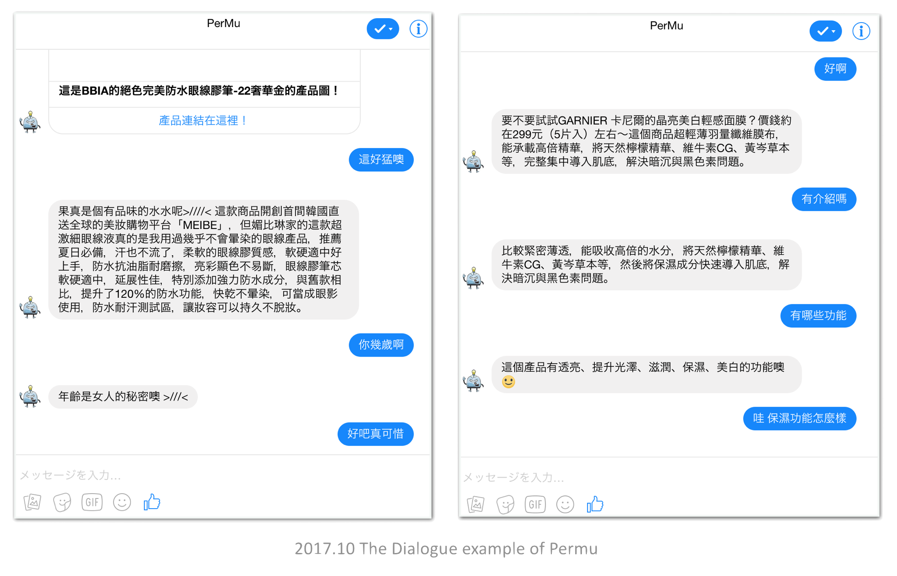
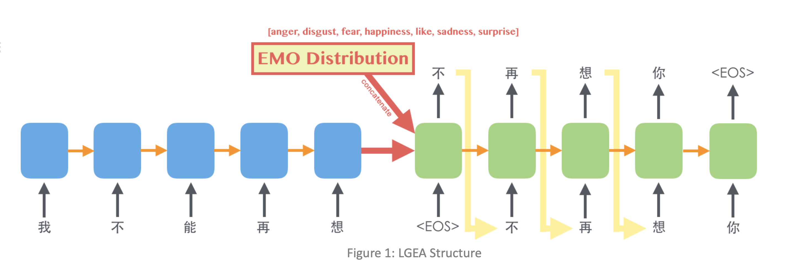
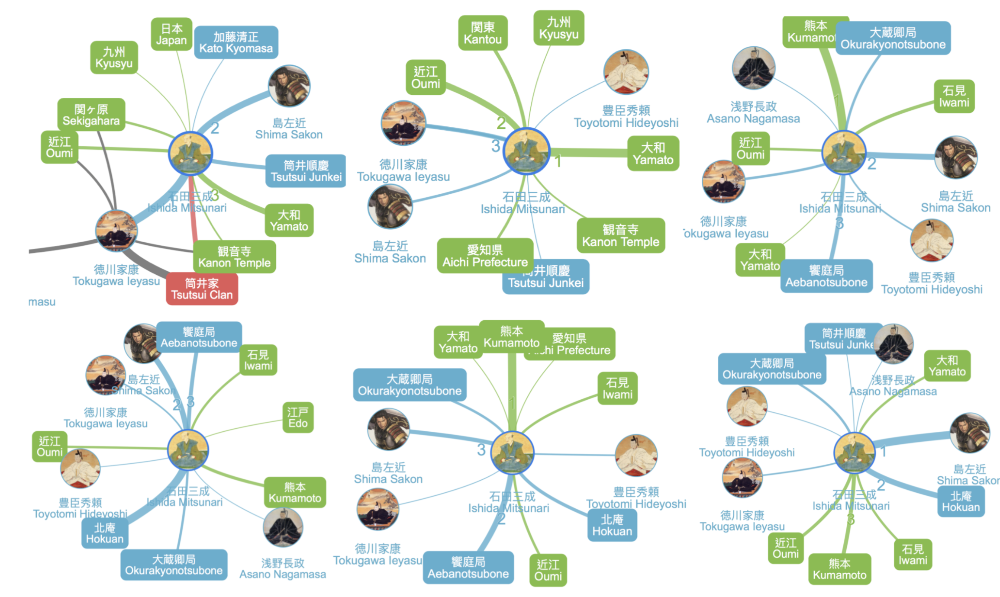

Language Learning
Recent projects related to Chatbot and NLP (natural language Processing).
Overview
Chatbot Research, which is an application of Natural Language Processing, mainly consists of three parts: Language Understanding (LU), Dialog Management (DM), and Natural Language Generation (NLG).
In my recent research, I use retrieval-based NLG connected with the cosmetic product database to make cosmetic recommendation system chatbot - Permu. Then I applied Reinforcement Learning Method on Dialog Management to improve the user evaluation and built a new conversational recommendation system - YourRS.
Connected with psychology, I also built a emotional listening chatbot - listenBot. This project combines both computer science and psychology, based on some psychological theories, making a chatbot let users speak their feelings and stories to the bot, and bot will reply in some emotional gifs, text or songs to users. Though it's is a simple work, we spent a lot of time on designing a fluent dialog flow.
Role & Duration
Research Assistant
@ National Taiwan University
@ Academia Sinica
User Interview, Data collection, Modal developing & training
SEP 2016 - AUG 2019
Section 1: Chatbot
How to give users a human like Chatbot experience?
Project
Permu - Recommendation Dialog System
Permu is a cosmetic recommendation chatbot. With Permu, users can ask about item functions or effects, or get recommendation and advice depending on their skin situations.
Dataset
Cosmetic product database from pixnet.net with 5946 products and more than 20,000 pixnet blog articles
Methods
- User Interview with 5 female users wearing makeup
- Use Name Entity Linking to establish the dataset and word embeddings
- Recurrent Neural Network-based Language Understanding (RNN-based LU)
- Retrieval-based Natural Language Generation (NLG)
- Rule-based Dialogue Management (DM)
Award
1st prize in task-oriented chatbot compete of 2017 Pixnet Hackathon. You can find the slides we used here.
Paper
YourRS - RL-based Recommendation Chatbot
Abstract
This paper describes a general model architecture Your-RS (URR Recommendation System) applying Reinforcement Learning (RL) on creating dialogue strategy which can be implemented in any domain dataset for conversational recommendation system (CRS). RL is a promising approach to create dialogue strategy and policy optimizations. In our experiments, we design a hypothetical dataset, collecting real dialogue dataset from Amazon Mechanical Turk, and test our model by human. The method is tested and shown to create a dialogue strategy which performs significantly better, and also can be generated using a small dataset.
Project
ListenBot - Emotional Therapy Chatbot
Abstract
We propose Chinese Listening Chatbot. It’s a chatbot people can talk to. We want to help people solve their emotional problems. Dialogue sequence is based on Full Catastrophe Living and SFBT(Solution-focused therapy). Make users can focus on their body, mood and thinking process. We also include pics and songs in replying contents. Hopefully, we can find some relations between these contents and users response, applying these data to future emotional analysis.
Method
- Psychological: Catastrophe Living and SFBT(Solution-focused therapy)
- Computer Science: Back-end develop
Resource
Try to talk with our Messenger bot, or check on the poster of this project.

Writing
Medium Writing
We propose Chinese Listening Chatbot. It’s a chatbot people can talk to. We want to help people solve their emotional problems. Dialogue sequence is based on Full Catastrophe Living and SFBT(Solution-focused therapy). Make users can focus on their body, mood and thinking process. We also include pics and songs in replying contents. Hopefully, we can find some relations between these contents and users response, applying these data to future emotional analysis.

Section 2: Other NLP Idea
Project
Emotional Lyrics Generator: an emotion-aware Jay(周杰倫)'s style lyrics generator
Abstract
Emotional intelligence is a key factor to make a song classic. This project proposes the Lyrics Generator with Emotion Awareness (LGEA), which generates lyrics that are: (1) reasonable at the content level (relevant and grammatical), and (2) intriguing at the emotion level.
Proposed Approach
- We train an Emotional Classifier to estimate sentences’ emotion distribution
- LGEA model encodes the previous sentence and its emotion cues into a vector representation
- LGEA model decodes the next line of lyrics character by character
- The LGEA encoder and LGEA decoder are trained jointly for continuous lyrics generation
Resource
Check on the poster of this project.

Project
SeqTextVis: A Distributed Word Representation Learning for Time Sequential Text Data Visualization
Abstract
Texts contain both implicit and explicit information. Explicit info can be easily observed and explored from co-occurrence matrix in text while finding and retrieving implicit info from raw text is very difficult, especially on time sequential text data. However, extracting both explicit and implicit info is important because it helps in explaining overall hidden relations among texts. In this paper, we propose SeqTextVis, a new method to learn from time sequential text data, and visualize explicit and implicit info based on distributed word representation learning methods: word2vec and node2vec. Word2vec, which is similar to co-occurrence approach, is a simple way to learn neighbor relations and extract explicit info; node2vec can extract implicit info by learning parsed structures. SeqTextVis combines with both advantages and time-decay feature to make dynamic graphs of both explicit and implicit relations chronologically. We used case study to explain correctness and effectiveness for SeqTextVis system evaluation.
Resource
Find the paper or check on the poster of this project.

Project
CEAM: A Novel Approach Using Cycle Embeddings with Attention Mechanism for Stock Price Prediction

Abstract
This paper presents a novel deep learning approach for the stock price prediction using a cycle embeddings with attention mechanism (CEAM) applying on Dual-Stage Attention- Based RNN (DA-RNN) model. The cycle characteristic is an important factor in time series prediction problem since it affects the trend of stock price. Thus, an effective cycle information can improve the prediction performance of stock price. In past years, many researches use the cycle feature with other features together as equally important, which might dilute the weight of cycle information since the cycle information should be paid more attention when making prediction on periodic data. As the result, we use CEAM making prediction with cycle information hidden in periodic data. The deep learning-based method has been developed in many fields and is a powerful prediction system. In addition, many researches use the embeddings feature and the attention mechanism to improve the prediction performance. In this paper, we propose a novel approach to capture the cycle information and use it to predict stock prices in U.S. stock market. The cycle information can be formed as a distributed vector as embeddings, called cycle embeddings. The CEAM approach use cycle embeddings to pay attention on periodically historical time series data by learning the cycle semantic relations between cycle characteristics and historical stock prices to optimize the prediction model. Therefore, the CEAM approach can improve the prediction performance for stock price. The experiments in this paper show that our proposed CEAM approach outperforms the another model which combines cycle feature with other features together as equally important.
Resource
Find the slides of the presentation or check on the poster of this project.